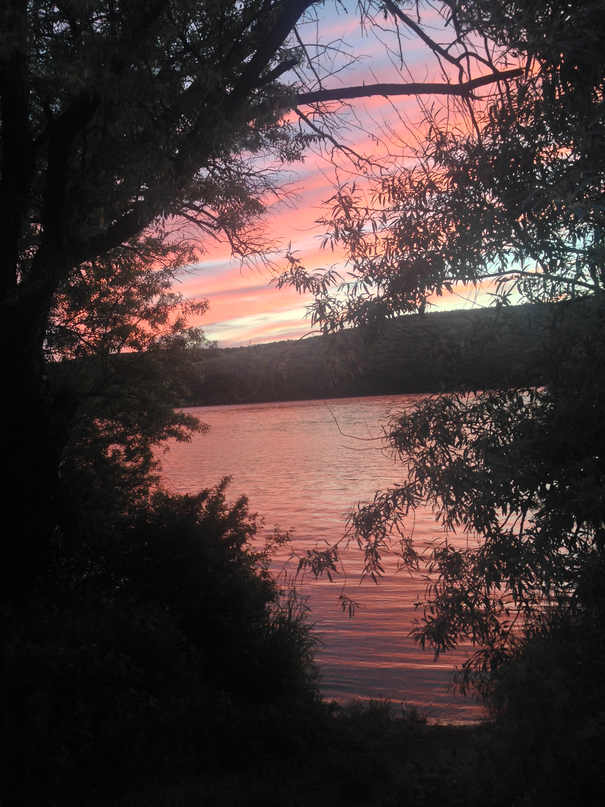

Made it to Montana!
And we're off!
Sorry for the picture dump you guys. I'll keep the writing short here! We've made it through City of Rocks, ID as well as Grand Teton NP and Yellowstone NP. So far, no real problems and having tons of fun (isn't summer great?)! We're currently at the public library in Bozeman montana taking a much needed internet and relaxation day.
First dinner (fish tacos!)
Some climbing in City of Rocks with both brothers (Eric and Justin), and a few other friends!
Rappelling of a fun multipitch.
Eww...climber feet..

Sunset from our campsite along the Snake River
Hey! The view is still amazing the next morning!
With no air conditioning in the wanagon, this water slide felt like a pretty great lunch spot somewhere in Idaho.
 Does free camping get any better in the Tetons? Thanks Riley for the info on this one!
Does free camping get any better in the Tetons? Thanks Riley for the info on this one!


 Hiking and exploring in Grand Teton National Park. I'm not so sure I ever want this trip to end.
Hiking and exploring in Grand Teton National Park. I'm not so sure I ever want this trip to end.

 Being very touristy in Yellowstone (with a bit of swimming thrown in as well!)
Being very touristy in Yellowstone (with a bit of swimming thrown in as well!)
Lessons Learned
Double bag anything going into the icebox (especially cheese)
Bear boxes in your campsite are rad
- We made the right decision to "retire" and go on a roadtrip!
Love you all!
KSQUARED (get it?)